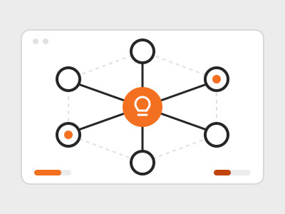

Creativity Engine
Eine KI-gestützte Plattform für die nachhaltige Entwicklung von Ideen, mit mehr Strenge als ein gewöhnliches Chat-Fenster.
Die Creativity Engine richtet sich an Gründerinnen und Gründer, Solo-Builder und alle, die beim Entwickeln von Ideen mehr Sorgfalt brauchen, als ein Chat-Fenster bietet, ohne dass ein ganzes Team bereitsteht, das jeden Entwurf hinterfragt.
Gängige KI-Chats vermischen Generieren, Bewerten und Entscheiden in einem einzigen Gesprächsfluss. Das ist schnell, schwächt aber oft die Reflexion: Antworten wirken selbstsicher, Kritik wird zur Zustimmung, und wie sich eine Idee verändert hat, lässt sich kaum noch nachvollziehen. Die Creativity Engine behandelt deshalb jede Idee als dauerhaftes Objekt statt als flüchtige Nachricht und teilt die Arbeit auf sechs Rollen auf: Explorer, Generator, Evolution Engine, Jury, Theory Builder und Roadmapper. Jede Rolle übernimmt eine andere Denkaufgabe. Die Recherche bleibt belegt, das Generieren bewusst, die Kritik unabhängig vom Entwurf, der sie ausgelöst hat, und die Bewertung erfolgt aus mehreren Perspektiven statt in einem einzigen Urteil.
Das Produkt wird vom Menschen gesteuert. Die Oberfläche ist um eine Arbeitsfläche aufgebaut, auf der Nutzerinnen und Nutzer Elemente bewusst platzieren, verbinden und ausführen. Das System darf unterstützen und Vorschläge machen, führt aber nie unbemerkt einen kompletten Plan aus: Die KI stärkt das Urteilsvermögen, sie ersetzt es nicht. Technisch ist die Plattform eine Webanwendung in TypeScript mit Next.js (App Router), API-Routen als Backend und OpenAI-Modellen über ein gemeinsames Gateway. Das Design ist bewusst zurückhaltend und professionell: flache Flächen, helle strukturelle Linien und Farbe nur sparsam für aktive oder markierte Zustände.
Auf einen Blick
- Zielgruppe: Gründerinnen und Gründer, Solo-Builder und alle, die Ideen sorgfältig entwickeln wollen
- Sechs Rollen: Explorer, Generator, Evolution Engine, Jury, Theory Builder, Roadmapper
- Prinzip: Der Mensch steuert, die KI unterstützt und schlägt vor
- Technik: TypeScript, Next.js und OpenAI-Modelle